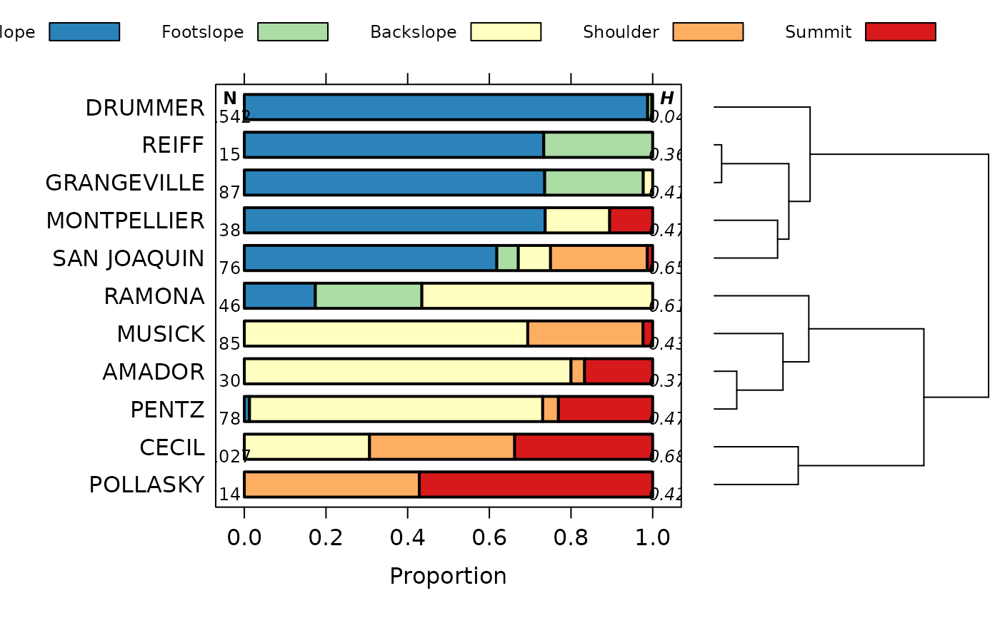

A unique display of hillslope position probability.
vizHillslopePosition(
x,
s = NULL,
annotations = TRUE,
annotation.cex = 0.75,
cols = c("#2B83BA", "#ABDDA4", "#FFFFBF", "#FDAE61", "#D7191C")
)data.frame as created by soilDB::fetchOSD(..., extended=TRUE), see details
an optional soil series name, highlighted in the figure
logical, add number of record and normalized Shannon entropy values
annotation label scaling factor
vector of colors
A list with the following elements:
fig: lattice object (the figure)
order: 1D ordering from cluster::diana
clust: clustering object returned by cluster::diana
See the Soil Series Query Functions tutorial for more information.
# \donttest{
if(requireNamespace("curl") &
curl::has_internet() &
require(aqp) &
require(soilDB)) {
# soils of interest
s.list <- c('musick', 'cecil', 'drummer', 'amador', 'pentz', 'reiff',
'san joaquin','montpellier','grangeville','pollasky','ramona')
# fetch and convert data into an SPC
s <- fetchOSD(s.list, extended=TRUE)
res <- vizHillslopePosition(s$hillpos)
print(res$fig)
}
#> Registered S3 method overwritten by 'dendextend':
#> method from
#> rev.hclust vegan

# }